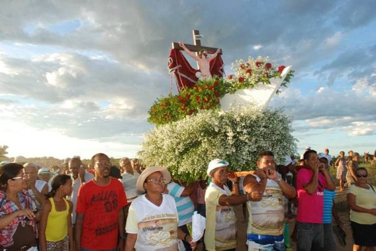
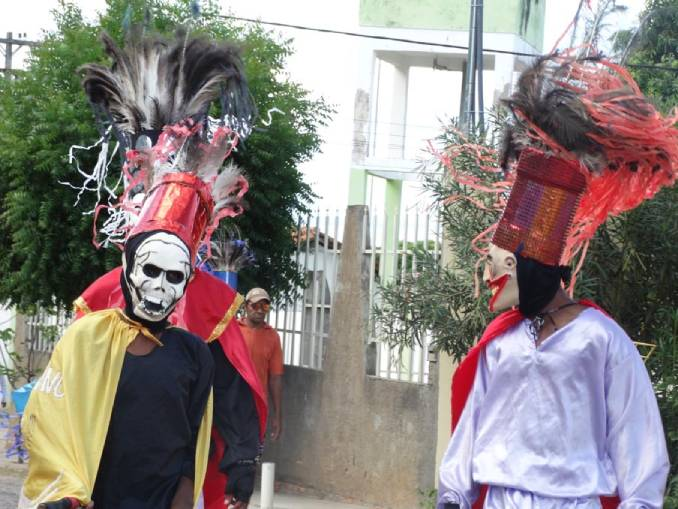
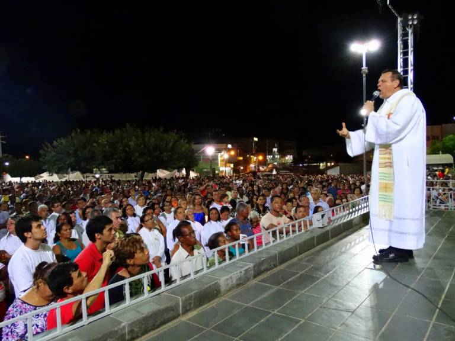
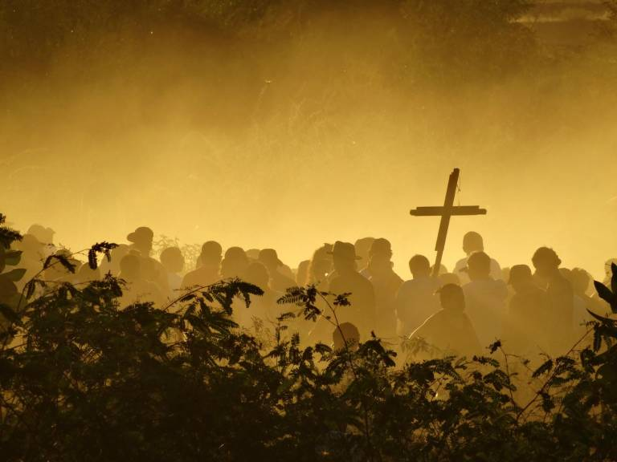
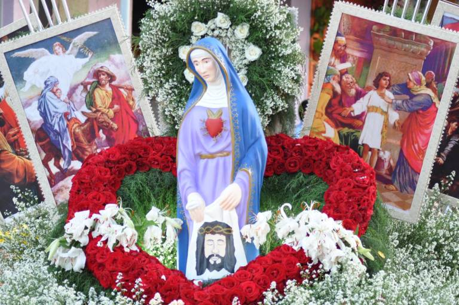
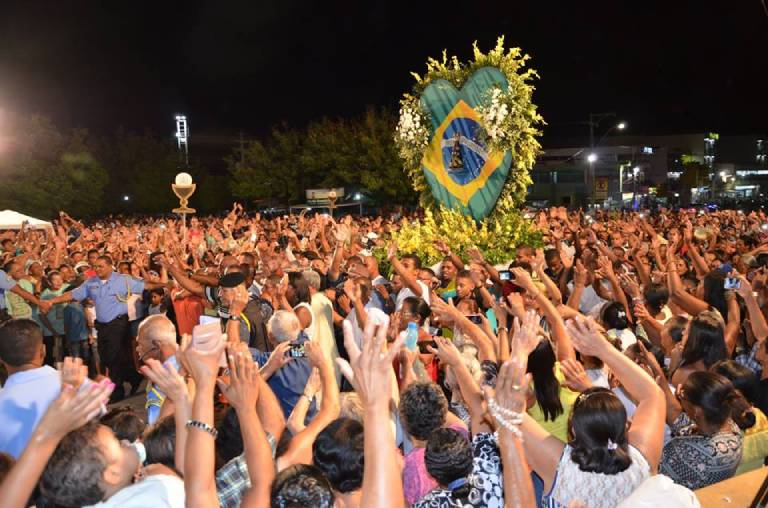
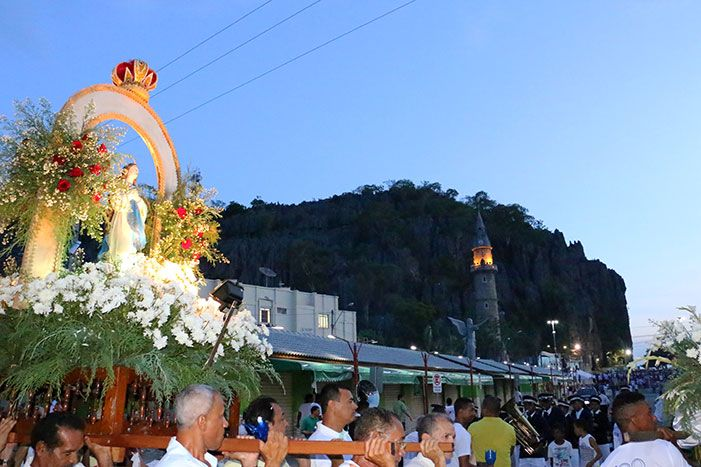

EVENTOS RELIGIOSOS EM BOM JESUS DA LAPA
FESTA DO BOM JESUS DOS NAVEGANTES

O Rio São Francisco com suas baixas águas recebe a procissão do Bom Jesus dos Navegantes no dia de 11 de janeiro. Nos braços dos devotos, o andor segue por uma estrada que se abriu no meio do rio, devido à grande e triste seca que pode ao menos propiciar este momento diferenciado. Das margens do “Velho Chico” alguns fiéis acompanham uma cena que não ocorre todos os dias pelo local.
Esta tradição pode ser chamada de cordão humano pela fé, trazendo muitas alegrias aos participantes. A população ribeirinha que é católica se diverte na organização de toda esta festa, que é preparada com muito carinho. Além disso, órgãos públicos como a Marinha do Brasil são envolvidos nas celebrações, ficando com a parte da celebração aquática da festa. Lembrando que a prefeitura da cidade prontifica suas secretarias para que tudo ocorra muito bem neste período de visitações e festa. A festa do Bom Jesus dos Navegantes atrai centenas de visitantes até a cidade e é muito conhecida pelas redondezas, completando seus mais de 50 anos de tradição popular. São adultos, adolescentes e até mesmo crianças que se reúnem às margens do São Francisco para expressar a sua fé.
SEMANA SANTA

Entre as celebrações que mais movimentam a cidade, a Semana Santa em Bom Jesus da Lapa é uma delas. Com um intenso movimento no período, a cidade se enche de turistas, visitantes de todo o lugar, para participar de grande celebração da fé cristã. As atividades no período são muitas, especialmente organizadas para que os moradores e romeiros se unam para a comemoração da Paixão, Morte e Ressurreição do Senhor. Entre as celebrações, os fiéis poderão participar da Via Sacra pelas ruas, que não acontece somente na Semana Santa e sim, em todas as sextas-feiras da Quaresma. No domingo que antecede a Páscoa acontece a tradicional Bênção de Ramos, relembrando a acolhida de Jesus na entrada de Jerusalém – de todas as comunidades da cidade, bem como do Santuário, saem procissões, em direção à Catedral em construção, onde acontece e celebração Eucarística. Na noite de quarta-feira anterior à sexta-feira santa, acontece outra procissão, chamada de “Procissão do Encontro”, em uma das praças da cidade. Durante a procissão, a imagem de Nossa Senhora das Dores é carregada pelas mulheres e a imagem do Senhor dos Passos é carregada pelos homens. Há também apresentação de teatro, da Paixão e Morte de Jesus. Na quinta-feira santa, acontece a Missa da Ceia do Senhor e a tradicional Cerimônia do Lava-pés, na Esplanada do Santuário. A sexta-feira santa começa bem cedo, com a multidão subindo o morro do Santuário, cantando e rezando a Via Sacra. À tarde acontece a Celebração da Paixão de Cristo, onde há o ritual de beijar o pé de Cristo na cruz e depois acontece a procissão com a imagem do Senhor morto. Os demais acontecimentos são a Procissão Luminosa, que marca o início das festividades de Páscoa e acontece próximo ao Santuário, quando é feita uma fogueira e aceso o Círio Pascal, uma vela grande que representa o Cristo Ressuscitado. Após, a procissão segue para a Celebração da Vigília Pascal, no Santuário.
FESTA DO DIVINO ESPIRITO SANTO

A Festa do Divino Espírito Santo é uma das mais antigas celebrações do catolicismo popular. É um culto ao Espírito Santo em suas mais diversas manifestações. Nessa matéria especial iremos abordar a história da Festa do Divino Espírito Santo e como ela é realizada em Bom Jesus da Lapa. As fotos são de autoria do Irmão Ivanor Borges (CSSR – Missionário Redentorista). Bom Jesus da Lapa é conhecida por suas romarias que atraem um grande número de visitantes todos os anos. Os peregrinos e fiéis vêm de toda parte, do Brasil e do mundo, e o município se prepara para recebê-los da melhor forma possível. Os turistas fazem da cidade um lugar movimentado e vivo, mas aqueles que moram em Bom Jesus também dispõem de um momento, digamos, particular. Trata-se da Festa do Divino Espírito Santo. O evento reflete a cultura, identidade e memória da comunidade local. É uma festa religiosa feita na Lapa para seus próprios moradores. A Festa do Divino é parte da Romaria do Bom Jesus. Celebrada 50 dias após a Páscoa, a ocasião é marcada por missas, procissões e exibições artísticas. Em 2017 a iniciativa recebeu o título de Bem Cultural Imaterial do Estado da Bahia. A Festa funde elementos da cultura popular com religiosidade. É uma comemoração tipicamente folclórica e espontânea. Ela se configura como uma das mais antigas celebrações do catolicismo popular de Bom Jesus da Lapa, com mais de um século de existência. A comemoração foi instituída pela rainha Isabel de Aragão, de Portugal, em 1321, quando a Corte Portuguesa foi transferida para o Brasil, e se mantém até hoje. A movimentação das pessoas pelas ruas, visitando as casas com a bandeira, das crianças com a fantasia chamada de “careta”, dos passeios a cavalo pela praça principal da cidade, segundo o costume se inicia oito dias antes do festejo. Durante o desfile pelas ruas da cidade, são apresentadas diversas manifestações culturais, como a cavalhada, o bumba-meu-boi, a marujada, além da encenação do desfile da Corte do Imperador com o Cortejo Real. Os personagens costumam atravessar famílias, geração após a geração, passando de pai para filho. O ápice da festa acontece no domingo de Pentecostes, quando o Cortejo Imperial percorre as ruas da cidade em direção ao Santuário, onde se celebra a “Missa do Imperador”.
Corpus Christis
uma festa religiosa baseada em tradições católicas. A expressão significa “Corpo de Cristo” e é celebrado 60 dias após a Páscoa. Em Bom Jesus da Lapa, a Capital Baiana da Fé, a festa ganha ainda mais destaque, com algumas particularidades. O objetivo da comemoração é celebrar o mistério da Eucaristia, que é o sacramento do corpo e do sangue de Jesus Cristo – daí o nome. Acontece sempre na quinta-feira seguinte ao domingo da Santíssima Trindade, e a quinta-feira é em alusão à quando Jesus instituiu o referido sacramento. A celebração da data na Capital Baiana da Fé atrai e reúne milhares de pessoas, que participam da Santa Missa, logo em seguida de uma procissão pelas ruas da cidade até chegar ao ponto onde será feita a adoração ao Santíssimo Sacramento. Normalmente a missa é celebrada na esplanada do Santuário e depois sai pelas ruas enfeitadas, indo até a igreja de um bairro (esse ano foi na Catedral em Construção) onde é feita a adoração e bênção do Santíssimo. A procissão, que sempre é feita pois é parte da celebração, lembra a caminhada do povo peregrino, o povo de Deus, em busca da Terra Prometida. A cidade é enfeitada, suas ruas ganham cores por meio dos grandes tapetes coloridos com desenhos que simbolizam o pão, o cálice e Jesus Cristo, significando a Eucaristia. Essa tradição dos tapetes foi trazida de Portugal pelos colonizadores – os desenhos são feitos de serragem colorida, farinha, areia, borra de café, flores e folhas. Corpus Christi pode ser uma ótima oportunidade para quem quer conhecer a cidade de Bom Jesus da Lapa e visitar o Santuário. A cidade se prepara para receber os visitantes que chegam de todas as partes do Brasil. A data é propícia, pois além de ser feriado, pode-se acompanhar a festa religiosa católica e conhecer todas as belezas da cidade – seus pontos turísticos, o velho Rio São Francisco e o Santuário do Bom Jesus da Lapa, que traz a oportunidade de que possa renovar a sua fé e reforçar a sua espiritualidade.
ROMÁRIA DA TERRA E DAS ÁGUAS

Tradicionalmente conhecida por sediar as famosas Romarias do Bom Jesus e de Nossa Senhora da Soledade, a cidade de Bom Jesus da Lapa, que se localiza na região do Médio São Francisco, também é cenário de manifestações político-religiosas. Trata-se da Romaria da Terra e das Águas. A Romaria da Terra e das Águas traz manifestações político-religiosas em Bom Jesus da Lapa Lugar de grande potencial turístico, a importância histórica da cidade repousa essencialmente em seu Santuário: também é lá que ocorre a Romaria da Terra e das Águas. Realizada todos os anos, no primeiro final de semana do mês de julho, a Romaria da Terra e das Águas é a “caçula” das romarias e, a exemplo das outras, também ganhou amplitude regional e nacional. O evento data do final da década de 70 e com o passar do tempo vem se atualizando cada vez mais em relação aos acontecimentos sociais. Nela, o protagonismo é das comunidades campesinas, mas a Romaria abrange as mais variadas categorias de peregrinos, contemplando agricultores, lavradores, quilombolas, estudantes, assalariados, acampados, assentados, posseiros, meeiros e trabalhadores de todo tipo. A Romaria da Terra e das Águas em Bom Jesus da Lapa tem um forte apelo social, além do apelo religioso. É a celebração que faz com que o povo do campo se mobilize e que, além de renovar a sua fé, mostre ao mundo a sua luta constante. O grupo vai em busca do direito da terra e da água para todos, da libertação do latifúndio e de todas as formas de opressão. E para integrar a Romaria da Terra e das Águas vale tudo: o trajeto é feito de ônibus, de caminhão, de barco, a cavalo e em alguns casos até mesmo a pé, de inúmeros lugares da Bahia e também de outros estados brasileiros.
ROMARIA DO BOM JESUS

Todos os anos, a Capital Baiana da Fé, localizada na região Oeste da Bahia, a aproximadamente 800 quilômetros de Salvador, atrai milhares de fiéis de todas as partes do Brasil e do mundo que vêm em busca da Romaria do Bom Jesus da Lapa. Um dos motivos que torna a cidade bastante conhecida é a Romaria do Bom Jesus, celebração que reúne na cidade uma grande parte dos moradores e visitantes de todos os lugares do país. Trata-se de uma jornada de extrema importância para as pessoas religiosas e também para aqueles que apreciam as manifestações culturais que emanam do povo. Principalmente nesse período, a cidade de Bom Jesus da Lapa, que fica às margens do Rio São Francisco, fica repleta de visitantes. A maioria tem o mesmo desejo: expressar seu sentimento de gratidão por alguma graça alcançada ou fazer sua prece em busca de algum desejo difícil de ser realizado. A Romaria ao Bom Jesus se dá em agosto, mas seus preparativos ocorrem meses antes para ofertar aos turistas a melhor recepção possível. Além de trazer um verdadeiro espetáculo de fé, a Romaria do Bom Jesus configura-se como uma enorme ferramenta para geração de emprego e renda no município. Setores como o da hotelaria, comércio, alimentação, transporte e entretenimento, veem na época uma grande oportunidade, e isso mobiliza a cidade a cada ano para um grande sucesso econômico. A Romaria do Bom Jesus é a terceira maior romaria do Brasil, atraindo mais de meio milhão de pessoas, com número crescente de fiéis a cada ano. Quem participa da Romaria do Bom Jesus da Lapa retrata o momento como inesquecível, emocionante e de pura fé. Meses antes da Romaria do Bom Jesus, a cidade já vai se organizando para oferecer aos peregrinos uma estadia de excelência, com serviços de infraestrutura, transporte e saúde funcionando perfeitamente para atender as demandas do grande contingente de pessoas que aporta na cidade. A Festa do Bom Jesus da Lapa acontece sempre no dia 6 de agosto, mas a movimentação já começa acontecer logo após as comemorações juninas, quando começam as preparações. E logo após o dia 28 de julho, a movimentação se intensifica, a cidade já começa a notar os efeitos do início da festa. A cidade entra em estado de recepção da enorme quantidade de pessoas que virão participar da Romaria do Bom Jesus. Muitos prédios comerciais, principais hotéis e rancharias, então concluindo suas reformas para melhor receber esses visitantes. Ambulantes começam a organizar o espaço onde irão colocar suas barracas. É realmente visível as mudanças que ocorrem na última quinzena de julho. Estima-se que cerca de 600 mil visitantes chegam ao município durante a semana oficial da Romaria do Bom Jesus, podendo esse número chegar a 1 milhão nos dias que antecedem ou sucedem o novenário, que culmina na procissão de encerramento. Para todo esse contexto obter sucesso, a cada evento semelhante a Prefeitura Municipal faz adaptações e ajustes, efetuando as medidas necessárias para dar ao romeiro uma cidade cada vez mais otimizada para recebê-lo e também para que o morador se sinta satisfeito. Com os sistemas e os serviços operando em sintonia e de forma ágil, Bom Jesus da Lapa atinge, assim, o status de cidade turística de grande porte em âmbito nacional e internacional. Ruas amplas, com mais conforto e acolhimento aos pedestres, trânsito organizado e mais espaço para os comerciantes e empreendedores, com praças e mercados novos ou revitalizados e estruturas como o Shopping do Romeiro, são alguns dos pontos à disposição e que conferem uma boa estadia aos peregrinos.
ROMARIA DE NOSSA SENHORA DA SOLEDADE

Entre as principais romarias de Bom Jesus da Lapa está a Romaria de Nossa Senhora da Soledade, que em 15 de setembro reúne milhares de romeiros. A cidade localizada no oeste baiano, Bom Jesus da Lapa é uma das rotas do turismo religioso no Brasil. É em Bom Jesus da Lapa que se localiza um dos santuários mais visitados anualmente por turistas, fiéis e romeiros: o Santuário de Bom Jesus da Lapa. Verdadeira Meca dos sertões, Bom Jesus da Lapa é terra de oração: tudo na cidade passa pela fé e por isso ela atrai milhares de romeiros todos os anos. O Santuário de Bom Jesus tem tradição cristológica, ou seja, nele predomina o culto a Jesus Cristo, mas lá também se encontra a devoção mariana, que se fortalece com a realização da Romaria de Nossa Senhora da Soledade. Ao final desta matéria você encontra várias fotos da Romaria de Nossa Senhora da Soledade. De acordo com fontes seguras, a Romaria da Soledade de 2021 acontecerá de forma semelhante à romaria do Bom Jesus, ou seja, virtual. Porém, no que se refere às visitações, será mais flexível, com mais coisas liberadas. A grande dúvida ainda é sobre a procissão, mas ao que tudo indica o andor percorrerá as ruas da cidade no carro, sem a tradicional presença dos fiéis em seu entorno. É o que temos de informações sobre a Romaria de Nossa Senhora da Soledade em 2021. A devoção à Nossa Senhora da Soledade fazia parte da vida religiosa do fundador daquele Santuário, Francisco de Mendonça Mar. Acredita-se que esta devoção de Francisco nasceu de sua experiência em Portugal, onde o culto a Nossa Senhora das Dores, chamada também de Soledade, estava intimamente ligada à da Paixão do Bom Jesus. Contam os historiadores que Francisco, o Monge, foi chamado pelo arcebispo para ir a Salvador e, após uma preparação, em 1706, ordenou-o sacerdote e o nomeou Capelão do “Santuário do Senhor Bom Jesus da Lapa e de Nossa Senhora da Soledade”. Então, em homenagem à Mãe das Dores, o Monge da gruta passou a se chamar Padre Francisco da Soledade. Segundo a “Resenha Histórica” de Monsenhor Turíbio, Francisco de Mendonça Mar veio “àquele prodigioso sítio da Lapa trazendo em mãos uma lâmina, tão pequena como a palma de uma mão, de Nossa Senhora da Soledade”. Ele a colocou na gruta junto à imagem do Senhor crucificado e a partir daquele momento começou a desenvolver-se, aos poucos, aquela Romaria.
FESTA DE NOSSA SENHORA DE APARECIDA

Aconteceu no último final de semana, durante os dias 9, 10 e 11 de outubro, em Bom Jesus da Lapa, o Tríduo em homenagem à Nossa Senhora Aparecida. No dia 12 de outubro ocorreu a tão esperada Romaria ou Festa de Nossa Senhora Aparecida, atraindo mais de 100 mil visitantes. Essa romaria é uma das maiores que acontecem na cidade. O Santuário do Bom Jesus da Lapa foi palco de muitas homenagens e de muitos louvores. O Santuário e a cidade acolheram milhares de romeiros que vieram de várias partes do Brasil e também do mundo. Foram três dias de muita emoção e de muitos agradecimentos. Durante todos os dias da festividade, o Santuário é visitado por pessoas que chegam em Bom Jesus da Lapa, principalmente para pagar suas promessas pelas graças que lhes foram concedidas. Os testemunhos mostram pessoas que participam da celebração pelo dia de Nossa Senhora Aparecida todos os anos, que sempre voltam e que não têm nenhuma intenção de deixar de celebrar esse dia especial em Bom Jesus da Lapa. Muitos até em idade avançada, mas que se recusam a deixar de participar da romaria – mostrando que a perseverança realmente os aproxima do reino de Deus. A Festa de Nossa Senhora Aparecida é uma das maiores festas católicas da capital baiana da fé, a cidade de Bom Jesus da Lapa, um dos destinos religiosos mais conhecido e visitado todos os anos.
FESTA DE NOSSA SENHORA DA CONCEIÇÃO
Bom Jesus da Lapa, cidade conhecida como a capital baiana da fé, recebe milhares de romeiros para uma grande festa religiosa, a Festa de Nossa Senhora da Conceição, que acontece no dia 08 de dezembro e tem seu ponto culminante com a grande procissão que enche as ruas da cidade.A Festa de Nossa Senhora da Conceição é comemorada há mais de 100 anos. Foi celebrada pela primeira vez, em 1915, quando famílias tradicionais da cidade levaram seu testemunho de fé e de fidelidade à santa. Em 2015 o tema central da festa foi “Com a Virgem Maria está toda a plenitude de graças”. O tema foi baseado no ofício que é um patrimônio de fé do povo brasileiro à virgem Maria, mãe de Deus e é permeado por temas transversais que englobam mensagens e ações de fé, levando alegria e esperança às pessoas que participam da festa. A festa é celebrada no tempo litúrgico do advento Natal, quando é tempo de lembrar da escolhida por Deus para ser a mãe do filho de seu filho. Esse advento é a preparação para a Festa de Nossa Senhora da Conceição em Bom Jesus da Lapa, que tem uma forte devoção à santa. Na manhã do dia 08 acontece a Santa Missa e também a bênção do Altar da Soledade, totalmente reformado e ainda mais bonito.
FESTA DE SANTA LUZIA

No dia 13 dezembro, milhares de romeiros participam da Festa de Santa Luzia em Bom Jesus da Lapa. A procissão de Santa Luzia em Bom Jesus da Lapa lota as ruas por onde passa, vindo a ocupar grande parte da Rua Santa Luzia e início da Avenida Agenor Magalhães. É uma festa religiosa muito bonita, onde a fé se fez presente no coração dos fiéis. Bom Jesus da Lapa é conhecida como a “capital baiana da fé”. Isso é facilmente explicável pelo número de fiéis que a cidade atrai a cada ano por conta das festas tradicionais religiosas e das romarias, além do lindo e misterioso Santuário do Bom Jesus da Lapa. Uma dessas tradicionais festas religiosas de Bom Jesus da Lapa é a Festa de Santa Luzia, que a cada ano reúne milhares de pessoas e, consequentemente, a cada ano cresce o número de moradores, turistas e visitantes que acompanham a procissão. A festa e a procissão de Santa Luzia são realizadas todos os anos entre os dias 10 e 13 de dezembro, começando com o tríduo, que são as 3 missas na capela de Santa Luiza e terminando com a procissão, no dia 13, saindo da capela e indo em direção à esplanada do Santuário. A procissão pelas ruas da cidade – o cortejo com a imagem da Santa, é sempre realizada logo após esse tríduo preparatório, e nos últimos anos aconteceram algumas adaptações, propostas pelos organizadores, devido ao aumento no número de pessoas que acompanham a procissão a cada ano.